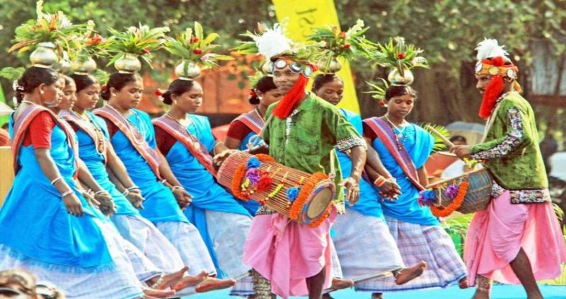

"Uttar Pradesh is a state in northern India. With over 200 million
inhabitants, it is the most populated state in India as well as the
most populous country subdivision in the world. It was established in
1950 after India had become a republic. It was a successor to the
United Provinces (UP) during the period of the Dominion of India
(1947–1950), which in turn was a successor to the United Provinces
(UP) established in 1935, and eventually of the United Provinces of
Agra and Oudh established in 1902 during the British Raj. The state is
divided into 18 divisions and 75 districts, with the state capital
being Lucknow, and Allahabad (Prayagraj) serving as the judicial
capital. On 9 November 2000, a new state, Uttaranchal (now
Uttarakhand), was created from Uttar Pradesh's western Himalayan hill
region."

"The history of Uttar Pradesh the Northern Indian state, stretches
back technically to its formation on 1 April 1937 as the North-Western
Provinces of Agra and Awadh, but the region itself shows the presence
of human habitation dating back to between 85,000 and 73,000 years
ago. The region seems to have been domesticated as early as 6,000 BC.
The early modern period in the region started in 1526 after Babur
invaded the Delhi Sultanate, and established the Mughal Empire
covering large parts of modern Uttar Pradesh. The remnants of the
Mughal Empire include their monuments, most notably Fatehpur Sikri,
Allahabad Fort, Agra Fort, and the Taj Mahal. The region was the site
of the Indian Rebellion of 1857, with revolts at Meerut, Kanpur, and
Lucknow. The region was also a site for the Indian Independence
movement with the Indian National Congress. After independence in
1947, the United Provinces were renamed Uttar Pradesh in 1950. In
2000, the state of Uttarakhand was carved out from Uttar pradesh."
"Uttar Pradesh is a province famous for its wonderful pilgrim
destinations and gorgeous tourist spots. The state is very well known
as a land of traditional, cultural and historical importance. The dual
temple cities of Mathura and Vrindavan followed by the great Ram
Janmabhoomi, and Varanasi and many more temple cities are the major
pilgrim attractions of the state. As a part of its religious heritage,
Uttar Pradesh is also the land of a number of festivities and
celebrations. Many festivities as per the religions of Hinduism and
Buddhism are celebrated in a magnificent manner. Here are some of
those and their story behind them, which are the popular festivals
celebrated in Uttar Pradesh."

Popular Festivals and Cultural Events Celebrated In Uttar Pradesh
- Buddha Purnima
- Ganga Dashera
- Makar Sankranti
- Dusshera
- Ram Navmi
- Deepawali
- Lath Maar Holi
- Janmasthmi
- Fair and Festivals
Chhath Puja is the biggest festival of eastern Uttar Pradesh.[287]
The Kumbh Mela, organised in the month of Maagha (February—March),
is a major festival held every twelve years in rotation at Allahabad
on the river Ganges.[288] Lathmar Holi is a local celebration of the
Hindu festival of Holi.
- Music and Dance
Kathak, a classical dance form, owes its origin to the state of
Uttar Pradesh.[284] Ramlila is one of the oldest dramatic folk
dances; it depicts the life of the Hindu deity Rama and is performed
during festivals such as Vijayadashami.[285] In the gharana dance
form, both the Lucknow and the Benares gharanas are situated in the
state.

- Language and Literature
Several texts and hymns of the Vedic literature were composed in
Uttar Pradesh. Renowned Indian writers who have resided in Uttar
Pradesh were Kabir, Ravidas, and Tulsidas, who wrote much of his Ram
Charit Manas in Varanasi. The festival of Guru Purnima is dedicated
to Sage Vyasa, and also known as Vyasa Purnima as it is the day
which is believed to be his birthday and also the day he divided the
Vedas.
Food
Mughlai cuisine is a style of cooking developed in the Indian
subcontinent by the imperial kitchens of the Mughal Empire. It
represents the cooking styles used in North India, especially Uttar
Pradesh, and has been strongly influenced by Central Asian cuisine.
Awadhi cuisine from the city of Lucknow consists of both vegetarian
and non-vegetarian dishes. It has been greatly influenced by Mughlai
cuisine
Beauty of Nature
Religious tourism is an important element. Varanasi is a major
religious hub and one of the seven sacred cities (Sapta Puri) in
Hinduism and Jainism.[258][259][260] Vrindavan is considered to be a
holy place for Vaishnavism.[261][262] Owing to the belief as to the
birthplace of Rama, Ayodhya (Awadh) has been regarded as one of the
seven most important pilgrimage sites.[263][264][265] Millions gather
at Allahabad to take part in the Magh Mela festival on the banks of
the Ganges.
Flore and Fauna
Uttar Pradesh has an abundance of natural resources.[96] In 2011 the
recorded forest area in the state was 16,583 km2 (6,403 sq mi) which
is about 6.9% of the state's geographical area Tropical thorny
forests, consisting of widely scattered thorny trees, mainly babool
are mostly found in the southwestern parts of the state Other animals
in the state include reptiles such as lizards, cobras, kraits, and
gharials. Among the wide variety of fishes, the most common ones are
mahaseer and trout. Some animal species have gone extinct in recent
years, while others, like the lion from the Gangetic Plain, the
rhinoceros from the Terai region, Ganges river dolphin primarily found
in the Ganges have become endangered
Jungle and Wildlife
Dudhwa National Park is a national park in the Terai belt of marshy
grasslands in northern Uttar Pradesh, India. It stretches over an area
of 490.3 km², with a buffer zone of 190 km². It is part of the Dudhwa
Tiger Reserve in the Kheri and Lakhimpur districts.
VISITOR ATTRACTIONS
- Natural Forest
- Tiger safari
- Grasslands
- Elephant Ride
- Migratory Birds